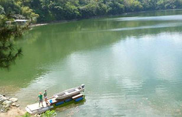

Lake Caonillas, Utuado
Located between the mountains of Utuado, Los Pinos Lake Resort has 16 cabins with a spectacular view of Lake Caonillas. The greenery and freshness of the environment around him, along with the backwater and peace that evokes the tranquility of Lake, harmonizes a perfect setting for the calm, meditation, relaxation and romance.

Pack Accordingly
One of most important things when it comes to traveling through the great outdoors is packing accordingly. Here are a few tips:
- Bring layers of clothing
- Pack sunscreen
- Carry extra water just in case
- Pack light

Vacation Home Rental
All cabins have a maximum capacity of six persons and balconies with panoramic lake view that includes:
- Room with one size bed "Queen", wall fan and large closets.
- Room has four "sofa daybed" size "Twin" (does not include pillows, or blankets).
- Kitchen equipped with stove top, refrigerator, and ample storage cabinets.
- It has a unit adapted for people with disabilities.

Attractions and Services
We offer other services and exciting attractions such as:
- Rental kayaks and canoes
- Remos Restaurant - (787)-814-1318
- Sidewalks
- Close to tourist attractions